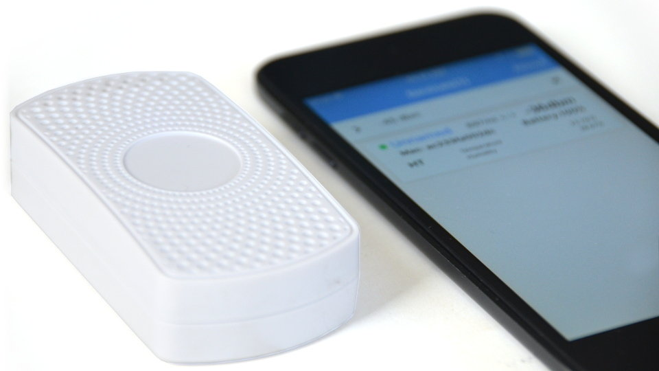

Configure a Minew S1 Beacon
Our step-by-step guide to configure a S1 beacon with the BeaconSET+ app.
The TL;DR (Too Long; Didn't Read)
Learn how we at reelyActive configure these beacons to balance functionality and battery life.
- What will this accomplish?
- A default configuration for efficient real-time location and acceleration sensing.
- Is there an easier way?
- Yes, Minew can configure beacons with these or other settings before they ship.
- So why would I read this?
- To learn both how and why to update the beacon's default settings.
Prerequisites
A Minew S1 beacon and the BeaconSET+ mobile app.
The BeaconSET+ app is available for both iOS and Android
Activate Bluetooth on the mobile device.
Minew S1 beacons are included with our Showcase Kit and can be purchased from Minew .
Activate the beacon's battery by pressing the button for 3 seconds.
Detect and Connect Step 1 of 3
Identify and connect via BLE to the beacon in the BeaconSET+ app.
- Why BeaconSET+?
- BeaconSET+ is the vendor-recommended app for BeaconPlus devices, such as the Minew S1.
- What's BLE?
- Bluetooth Low Energy (BLE) is a wireless personal area network technology like Bluetooth Classic, but with novel features and significantly reduced power consumption.
Note the MAC address of the beacon (16 characters). This is typically indicated on a sticker or engraved directly on the beacon itself.

Place the beacon near the mobile device then:
- Open the BeaconSET+ app
- Identify the beacon in the app by its MAC address
- Click on that beacon to initiate a connection
- When prompted, input the password which by default is minew123
Observe the main configuration screen from which the beacon settings may now be adjusted.
If many beacons are activated, it may be helpful to select Edit Filter in the app and select an RSSI threshold of -45dBm to display only beacons in close proximity.
Disable irrelevant SLOTS Step 2 of 3
Disable unnecessary packet transmissions for simplicity and extended battery life.
- What are SLOTs?
- A SLOT is a transmission window. The beacon supports 6 SLOTs for different packet transmissions.
- Why disable SLOTs?
- Unnecessary transmissions unnecessarily consume the battery.
From the BeaconSET+ app, while connected to the beacon, disable SLOTs 1 through 4 as indicated below:
iBeacon
- Select the SLOT1 tab
- Disable by selecting the Frame Type No Data or Empty
- Click on Save

UID
- Select the SLOT2 tab
- Disable by selecting the Frame Type No Data or Empty
- Click on Save
URL
- Select the SLOT3 tab
- Disable by selecting the Frame Type No Data or Empty
- Click on Save

TLM
- Select the SLOT4 tab
- Disable by selecting the Frame Type No Data or Empty
- Click on Save
Take care not to disable SLOT5 (INFO), else it may be difficult to reconfigure the beacon.
Configure the Sensor SLOT Step 3 of 3
Select how and when to transmit the temperature and humidity readings.
- Why temperature and humidity?
- The temperature and humidity data enables to understand environmental conditions.
- Why this frame type?
- The HT Sensor frame type includes the all S1's sensor data including battery level, as well as the MAC address by which it is uniquely identifiable.
From the BeaconSET+ app, while connected to the beacon, configure SLOT6 as indicated below:
HT Sensor
- Select the SLOT6 tab
- Select the Frame Type HT Sensor
- Adjust the Base params to the defaults in the table below
- Click on Save
| Base params | Default | Tradeoff |
|---|---|---|
| Adv Interval | 1000 ms | Responsiveness vs. Battery Life |
| RSSI | -24 dBm | Range vs. Battery Life |
| Radio Txpower | 0 dBm | Range vs. Battery Life |
Configuration is complete. Return to the beacon discovery screen of the BeaconSET+ app and observe that the beacon displays information about the accelerometer (X-axis, Y-axis, Z-axis) and on its identity (ID, battery and N/A).
Where to next?
Configure other beacons, or continue exploring our open architecture and all its applications.
-
Configure a Minew E8 Beacon
The accelerometer beacon. -

Configure a Minew C6 Beacon
The lanyard beacon. -

diyActive Home
The home for reelyActive developers.